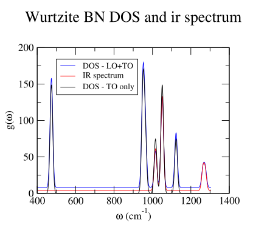
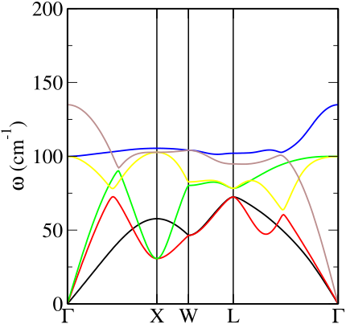
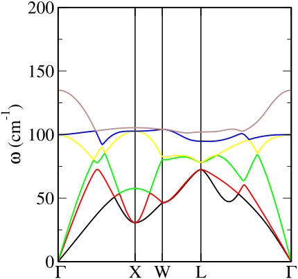

绘图与分析工具
有多种工具和程序可用于帮助自动化声子计算结果的后处理分析和绘图。以下介绍的工具均包含在CASTEP源代码分发包中，其他由独立开发的 光谱建模工具 可能被安装以进行更高级的建模，例如非弹性中子和红外光谱。
两个程序 dispersion.pl 并且 dos.pl 作为 CASTEP 源代码分发包的一部分，提供了用于分析和绘制结果的工具。两者均从文件中读取声子信息。 .castep 或者 .phonon 文件，并能生成布里渊区内的声子色散曲线以及声子密度态图。 1这些程序是用 PERL 语言编写的，PERL 几乎在所有现代操作系统中都可用。图表的生成由以下任一方式处理： xmgrace 或者 gnuplot 图形程序（Perl 程序生成一个 xmgrace 脚本并自动调用它）。 2
dos.pl
该 dos.pl 程序可以读取任意的 a .castep, a .phonon，或一个 .phonon_dos 文件并生成一个声子态密度图。参数以“UNIX风格”给出，紧跟在减号（连字符）之后。该命令
dos.pl -xg -w 10 <seedname>.phonon
将使用宽度为10 cm的高斯展宽生成声子态密度。^{-1}，并调用 xmgrace 以生成该图。如果一个 .phonon 文件中指定的态密度是基于文件中所有q点的加权平均值构造的。或者，可以读取CASTEP计算的自适应加权态密度。 .phonon_dos 若作为命令行参数给出的文件。
选项 -np, -ps, -eps 更改默认输出，并分别生成一个xmgrace文件、一个PostScript文件或一个封装的PostScript文件。这些文件被写入标准输出，因此请使用shell重定向（>) 用于命名你的绘图文件。该选项 -ir 选项权重通过计算的红外强度对计算得到的态密度进行加权 .castep 或者 .phonon 文件。这种简单的算法并不是红外粉末光谱的一个完全真实的模型，应仅被视为一种简单近似。 3 同样地， -raman 选项提取拉曼强度并计算加权光谱。所计算的光谱包含频率依赖性和斯托克斯热因子，因此比红外情况下的光谱模型更加真实。 -lorentz 选项从高斯展宽切换到洛伦兹展宽，并且 -temp T 选项设置斯托克斯热人口项的温度（单位：开尔文）。
图 [硼氮-态密度-红外] 展示了由使用生成的输出数据导出的一个示例 dos.pl 以图中的示例运行为例 [示例-伽马输出].

-
图8 基于图示运行的dos.pl示例输出 [示例-伽马输出]基于仅TO模式或TO加LO模式的红外光谱和态密度曲线已合并到一张图中，通过略微调整基线、缩放并添加图例。
dispersion.pl
该 dispersion.pl 程序可以读取一种或一种 .castep 或者一个 .phonon 文件并使用xmgrace生成色散曲线图。与行为不同 dos.pl 在读取这两个不同输出文件时，关于分支交叉检测方面存在一个重要的区别。高质量的色散图要求，即使在计算的波矢之间两个声子分支发生交叉，声子分支也应以连续线条绘制。Dispersion.pl 包含一种基于相邻点本征矢匹配来确定分支连通性的算法。仅有的 .phonon 文件包含本征矢信息，因此仅在此情况下启用交叉检测。该算法可能耗时较长，在大规模计算中可能需要几分钟才能完成，因此有时需要耐心等待。 -nj 选项（“no-join”）即使输入文件是一个也会禁用交叉检测。 .phonon 一。
选项 -np, -ps, -eps 行为完全如同对于 dos.pl一个有用的结果输出选项是 -symmetry <symm> 试图使用布拉格和克雷克内尔提出的常规布里渊区符号来标注高对称点。对称性关键字 cubic, fcc, bcc,
tetragonal, tetragonal, tetragonal-I, orthorhombic, hexagonal,
trigonal, trigonal-h （以及次要变体）被理解。
图 [rbbr-色散] 展示了标志和分支连接算法的影响。这些图表是基于对面心立方结构RbBr的傅里叶插值计算生成的，使用了以下命令
dispersion.pl -xg -symmetry fcc RbBr.phonon
并且
dispersion.pl -xg -symmetry fcc -nj RbBr.phonon
相应地。
 |
 |
- 图9 RbBr 的声子色散曲线由以下内容生成
dispersion.pl脚本和xmgrace。布里渊区标记是使用以下方法生成的-symmetry fcc选项。左侧图使用默认的分支交叉检测算法生成，该算法通过以下方式被禁用：-nj右图选项。该算法已将交叉模式与左图中的四个真正的避险交叉点区分开来。
mode_follow
mode_follow 是CASTEP源代码中Fortran工具套件的一部分，使用以下命令编译 make tools。正如其名称所暗示的，它的功能是基于前一次声子计算中生成的模式扰动，产生新的“冻结声子”构型，它通过写入一个或多个新构型的方式输出这些结果。 .cell 文件。事实上，它有两种运行模式。
-
为了生成一个序列
.cell被冻结声子在一系列振幅下扰动的文件，可用于探索该声子模式所引发的能量轨迹。mode follow -modemode_num-nampnum_amplitudes-ampmax_amplitude-qpointqx qy qz <seedname>|<seedname>.phonon哪个读取
.phonon以及相应的.cell文件并生成一系列 N+1 文件 seedname-i.cell包含通过选定本征矢扰动并乘以无量纲振幅因子得到的结构 f=A i/N, i=0 .. N. 参数是- mode_num
-
是整数索引号，用于选择使用哪种模式（默认值为1）
- qx qy qz
-
是从哪里提取q点？
.phonon文件（默认 (0,0,0)) - max_amplitude
-
是 A 用于创建（最大）位移的本征矢的无量纲尺度
- num_amplitudes
-
是 N，比需要生成的构型数量少一（默认值为 2）。
- seedname
-
是之前一次成功声子计算运行的种子名称。
该文件 seedname
.phonon必须存在且可读。如果mode_follow被调用时没有.phonon扩展部分，它还将尝试读取 seedname.cell文件如果存在，则会将其复制到输出中，并复制大多数其他单元格参数和设置.cell文件。作为在命令行中指定参数的一种替代方法
mode_follow也将尝试从一个名为文件中读取它们 seedname.mode-param如果存在。该文件应包含一个名为的Fortran命名列表freeze，其条目与命令行参数名称相同。例如为了产生一个非零声子的冻结声子构型 {\mathbf{q}}- 向量方面，还需要生成一个与波矢处冻结声子相容的超胞 {\mathbf{q}}. 此超胞可在
.cell使用通常的文件phonon_supercell_matrix块，或通过输入项SUPERCELL在 namelist 中freeze在.mode-param文件。（没有相应的命令行参数）。例如一个.mode-param包含区边界声子计算请求的文件可能包含 -
Mode_follow其第二种操作模式是生成结构受到固定声子扰动的输出文件，该声子具有相同的振幅但依次变化的相位，这些文件可用于对该模式进行动画展示。在这种情况下，num_amplitudes参数应被省略，以及另一种选择nframes提供的参数（要么在命令行中，要么在文件中）.mode-param文件）。这将生成一系列 N 帧之间由相隔的帧组成 2 \pi/N否则，参数和行为完全相同。一个脚本在……中
cteprouts包， e.g.cell2xtl,cell2pdb,cell2xyz则可以用来转换.cell将文件转换为适合可视化的格式。
声子
该程序 phonons，CASTEP工具套件中的一个组件是一个通用的声子后处理工具。它可以读取来自一个的全部动力学矩阵或力常数矩阵数据。 .check 或者 .castep_bin 在声子计算中生成的文件，可重新生成最终的声子输出，通过修改一个或多个“最终化”选项，而无需重复耗时的“电子”DFPT或超胞部分的晶格动力学计算。例如，可在最初未选择的情况下，对计算结果应用声学求和规则修正。
phonons 被调用的方式与 CASTEP 完全相同，并读取一个 .cell 以及一个 .param 与 CASTEP 完全相同地生成文件。这些文件可能与原始计算完全相同或非常相似，但 .param 文件必须包含的 continuation 关键词必须指向的 .check 或者 .castep_bin 包含动力矩阵数据的文件。如果计算成功，它将生成一个带有扩展名的日志文件 .phonon_out 以及一个新的 .phonon 文件。在这方面，一次运行的 phonons 在延续 Deck 上进行计算与重新运行非常相似。 castep 在同一张工作表上。然而，它不会尝试执行任何“电子”计算，并且会忽略任何此类尝试。例如，如果参数 elec_energy_tol 被更改了 castep 将丢弃保存的动力学矩阵数据并从头开始续算。 phonons 将忽略此操作，并将保存的数据作为续算运行处理。
此后处理可用于多种任务，包括
-
通过修改参数关键字来开启或关闭或调整声学求和规则修正项
phonon_sum_rule或者phonon_sum_rule_method. -
通过修改参数关键字来开启或关闭LO/TO分裂项的包含
phonon_calc_lo_to_splitting或者改变方向集合以 {\mathbf{q}}\rightarrow 0 通过添加或修改单元格%block PHONON_GAMMA_DIRECTIONS. -
在通过修改参数进行电场计算时，添加或省略低频离子项
efield_calc_ion_permittivity注意，尝试开启此功能只有在得到以下结果时才会成功： \Gamma单点声子计算已存储在的.check文件。phonons不会尝试进行计算此所需的电子计算，如果它不是。 -
通过添加或修改用于超胞或插值计算的目标细声子k点集来更改
%block PHONON_FINE_KPOINT_LIST,%block PHONON_FINE_KPOINT_PATH,phonon_fine_kpoint_mp_grid或类似的在.cell文件。这使得计算得以进行。 两者 一组色散曲线 并且 一个来自同一电子计算运行（DFPT/插值或超胞）的态密度。 -
采用标准（而非精细） Monkhorst-Pack 网格进行声子计算的结果，并作为后处理步骤执行傅里叶插值。
-
在球对称与各向异性方案之间切换插值方法。
以上所有内容也可以使用 castep 而不是 phonons 只要注意不改变任何控制“电子”部分计算性质的参数即可。然而 phonons 也可以执行一些额外的处理工作which castep 不能，尤其体现在同位素取代的晶格动力学计算中。
-
dispersion.planddos.plare also able perform very similar analysis and plotting of electronic eigenvalues from.castepor.bandsfiles and generate band structure and electronic DOS plots. ↩ -
On linux systems xmgrace can usually be found as a contributed package and installed using the system package manager. Xmgrace is also available for Microsoft Windows systems as part of the “cygwin” suite of programs (http://www.cygwin.com) along with shells, the PERL interpreter and an X-windows server (Xmgrace is an X-windows program and requires a running X server to display). ↩
-
A more sophisticated model of infra-red spectra was introduced by Balan and Mauri ((Balan et al. 2001; Kendrick and Burnett 2016) and subsequent works). Modelling of inelastic neutron spectra is discussed by Fair (Fair et al. 2022), Ramirez-Cuesta (Ramirez-Cuesta 2004; Cheng and Ramirez-Cuesta 2020) ↩